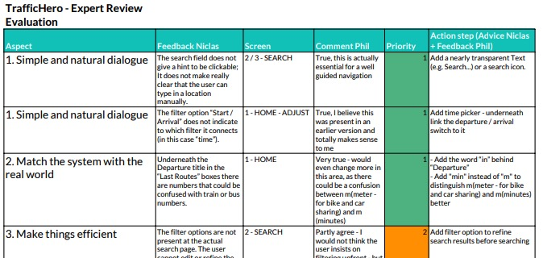

In this week, I am going to emphasize on the process of high fidelity prototyping, as our assignment deals with improving the low fidelity prototype from last week’s assignment and turn it into a feasible prototype showing the product in a pre-final state.
As I wanted to avoid a long iteration processes within the high-fidelity prototyping, I decided to emphasize on the last week’s assignment and the evaluation based on user research conducted during the testing. With the action steps taken after the user testing, I improved the prototype in the mentioned aspects and thus made it ready to be a solid base for a high-fidelity version.
Before starting with the high-fidelity version in Adobe XD, I tried to figure out, how to eventually save time in the high-fidelity prototyping process – or how to reuse already created elements in the low-fidelity version. As copying entire screens from Balsamiq to XD always ended up with static images, I tried digging a layer deeper and eventually found, that single elements could indeed be reused, won’t make any difference in the overall appearance and could save me a lot of time (still just as image – not possible to convert the copied element to a text element / vector).
For the overall design & structural part, I got inspired by Google’s Material Design. Thus, you will see many rounded elements in the final high-fidelity prototype. As the whole concept is fully based on the final implementation of week 3’s wireframing assignment, you will not find any major differences in structure, placement of elements – as getting rid of many iteration steps in the high fidelity prototyping process was part of my strategy and possible due to conducted user testing.
As part of this assignment, we had to recruit a person to evaluate each other’s project with. As my fellow students already provided me some feedback for the low fidelity version of “TrafficHero”, this time I decided to choose someone, who is A) an UX expert and B) new to the concept of my public transportation app. Niclas from class A did not hesitate long and delivered me a detailed evaluation sheet with actionable steps for possible changes and improvements.
Attached, you can find both, the original evaluation and an annotated version from my notes that would be crucial for the further development of TrafficHero.
As the Expert review ended up to be very detailed, I decided to analyze every single aspect mentioned in the expert review through going a step backwards: I opened the prototype file and tried to understand, what Niclas was trying to tell me, as not every critic point was entirely clear to me from the beginning.
In order to filter, prioritize and rephrase the needed action steps in my words, I created a reflection sheet on the expert review, where I included every single aspect from my notes and defined further steps on how to improve each aspect mentioned. Please find this sheet attached:
Attached, you will find the evaluation of the expert review, Niclas conducted before, including steps for further development of the TrafficHero app.
Just another week later – and I am glad to tell that with this assignment I was able to experience yet another learning curve. Thanks to a strong focus in the process of low-fidelity prototyping, I was able to realize the high-fidelity version with more confidence, a fraction of time effort and a way better workflow comparing it to past projects. Thus, I had more time to discover and scoop out features in XD, that I never got to use before: just like “Symbols”, that allows quick global changes, instead of using grouped layers that are at risk of getting inconsistent while iterating. All in all, a small but valuable insight that could potentially save a lot of time during high-fidelity iterating in future projects.
Even more value, to my surprise, I yet again gained from talking with “my” users. The amount of input enabled me to come up with new ideas on how to improve/implement existing or new features.